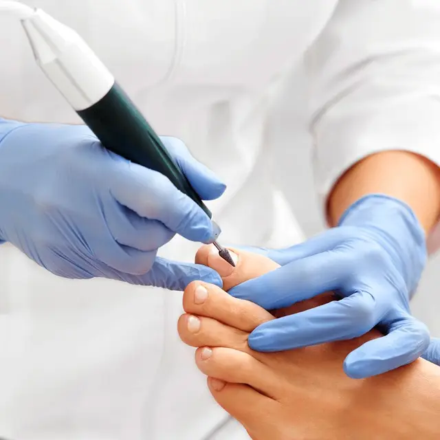

El precio final puede cambiar según la complejidad de cada caso, así que escríbenos y te damos una valoración personalizada.
Uña encarnada en Pachuca, con tratamiento desde la primera cita
Atención profesional con una podóloga certificada en Pachuca, que te atiende desde tu primera visita sin hacerte esperar ni pedirte papeleo de más.
Ese dolor al caminar, la infección que vuelve una y otra vez y los remedios caseros que nomás no funcionan tienen algo en común: solo un tratamiento podológico profesional resuelve el problema de fondo.
Cirugía de uña encarnada en Pachuca, un procedimiento rápido y ambulatorio, con anestesia local si tu caso la necesita.
Clínica especializada en uñas encarnadas en Pachuca, con equipo de esterilización certificado y un protocolo de bioseguridad seguido al pie de la letra.
Dónde sacan uñas encarnadas en Pachuca sin hacer fila, con atención particular y cita el mismo día por WhatsApp.
Tratamiento de uñas encarnadas en Pachuca con seguimiento después del procedimiento, para asegurarnos de que te recuperes bien.

No hay dos uñeros iguales, por eso la podóloga valora tu caso y elige el procedimiento ideal en esa misma cita.
Revisamos con detalle tu uña y la piel de alrededor para saber qué tan avanzado está el problema y qué tratamiento te conviene.
Es un procedimiento ambulatorio y poco invasivo, te recuperas rápido, no necesitas internarte y el seguimiento ya va incluido.
Te enseñamos a cortarte bien las uñas, qué calzado usar y qué cuidados seguir para que el problema no regrese.
Mándanos un WhatsApp, cuéntanos qué te pasa y te contestamos al momento.
Elegimos el horario que mejor te acomode, de lunes a domingo, sin filas ni papeleo.
La podóloga te revisa y, cuando se puede, te trata en esa misma visita.
No te dejamos solo ni sola, te damos seguimiento hasta que estés completamente bien.
Tarifas claras y sin sorpresas, el costo final depende de qué tan complejo sea tu caso.
Seguimiento con extracción de espícula (uña encarnada)
Corte de la uña afectada con seguimiento
Tenía meses con el dedo bien hinchado y sin mejorar. Vine con la Podóloga Aurora y en una sola cita me lo resolvieron. No me dolió nada y el seguimiento fue de primera.
Ya había probado de todo: cortármela yo, remedios de la abuela, pomadas de la farmacia... y nada. Aquí me explicaron bien qué iban a hacer, me lo hicieron ese mismo día y quedé como nuevo.
Andaba buscando dónde me sacaran la uña encarnada en Pachuca sin tanta vuelta y di con la Podóloga Aurora. Todo súper limpio, muy profesionales y me dieron cita al día siguiente.
Si el enrojecimiento se extiende más allá del dedo, hay secreción o fiebre, o si tienes diabetes y cualquier herida en el pie, no esperes, porque una uña encarnada infectada se complica muy rápido. Escríbenos ahorita y te orientamos.
Mándanos mensaje ahorita, la podóloga te responde y te agenda cita para hoy.
Dónde estamos
Pachuca, HidalgoHorario
Lunes a domingoEscríbenos directo
+52 56 4671 0131